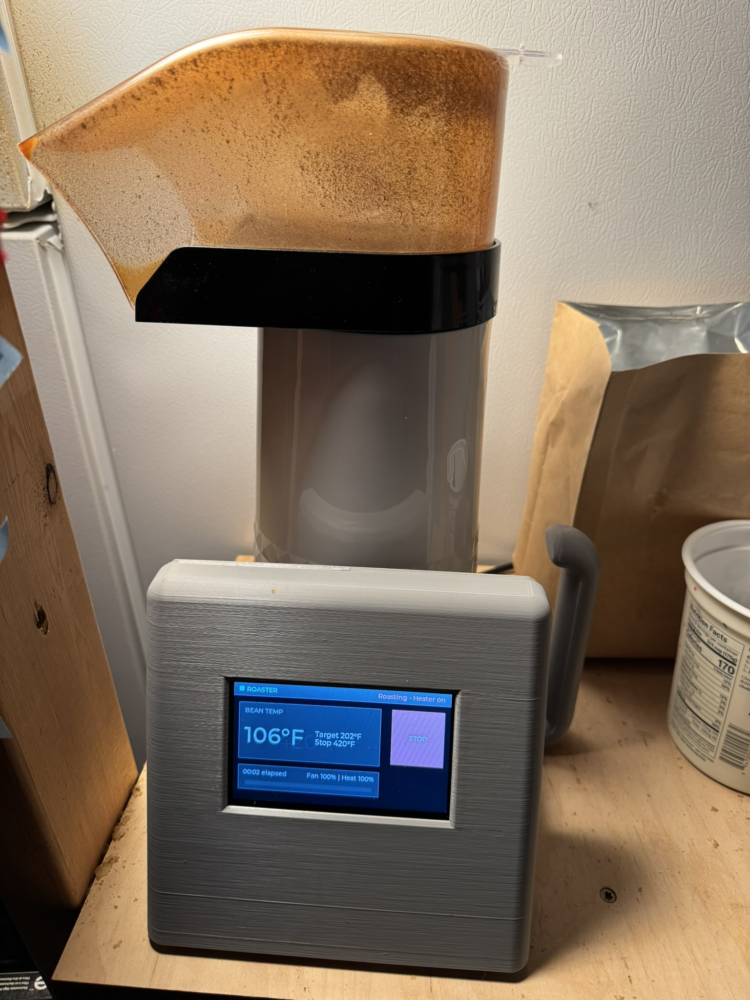
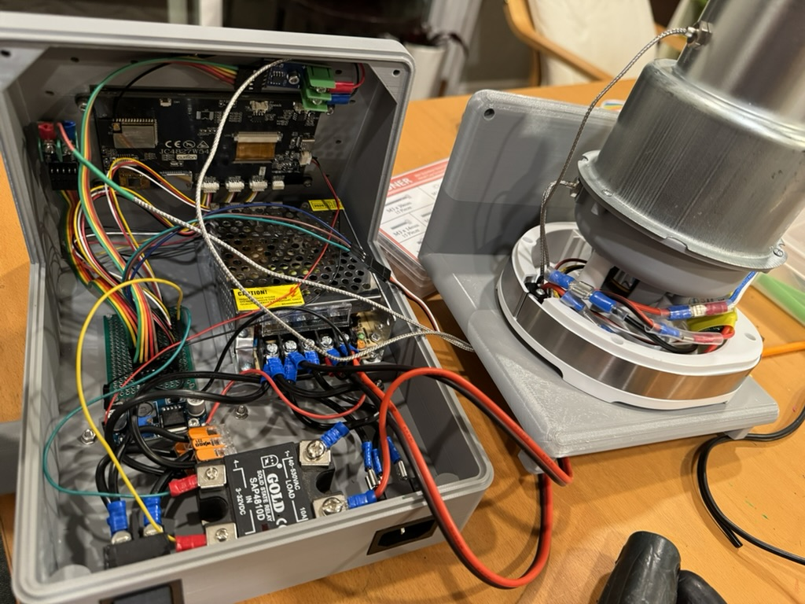
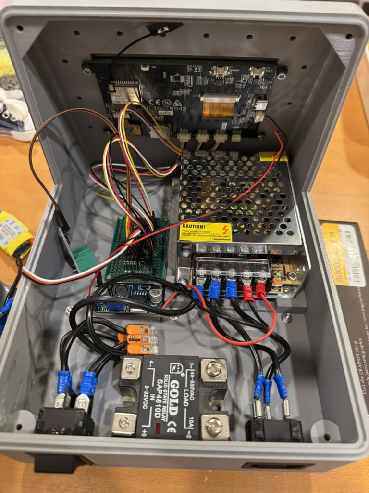
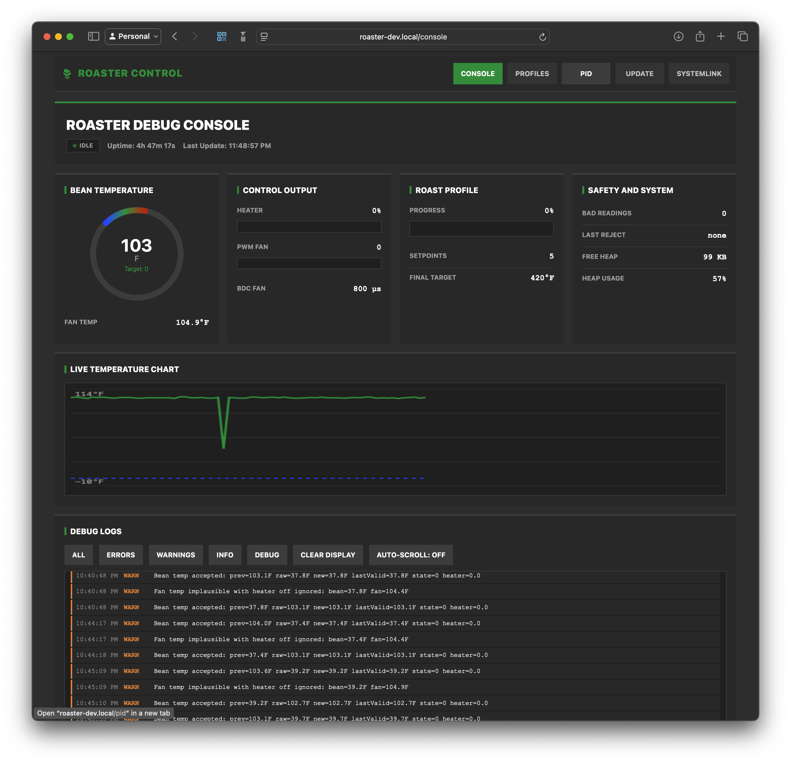
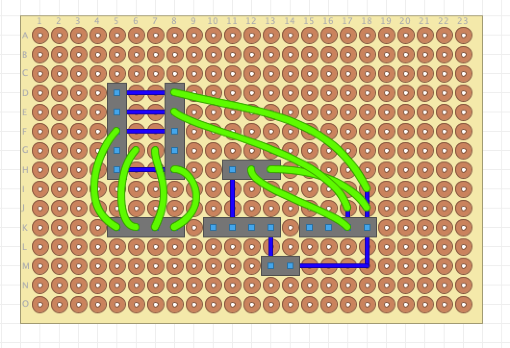

Hardware
Two fan-build options
The v2 build supports either the stock popper fan motor with a 24 V supply and DC speed controller, or a custom ASA fan with a brushless 12 V motor path.
JC4827W543C controller. Modified popcorn popper. Dual thermocouples. PID roast control. Dedicated build, BOM, firmware, and Artisan docs.


This site now points to the current v2 documentation instead of duplicating a second build guide. The repository centers on the JC4827W543C controller, the updated enclosure, and the active firmware toolchain.
The v2 build supports either the stock popper fan motor with a 24 V supply and DC speed controller, or a custom ASA fan with a brushless 12 V motor path.
The printed parts, breakout board, popper modification steps, wiring order, and first power-up checks now live in the dedicated build guide.

The JC4827W543C firmware includes the touchscreen UI, profile editor, debug console, PID workflow, OTA updates, and a REST API.

Artisan setup is documented separately now, with the settings file, connection flow, and screenshots moved out of the root README.

The v2 hardware and software instructions now live in dedicated markdown guides. Use these as the source of truth instead of the landing page.
Step-by-step user-facing assembly instructions with current printed-part names, breakout-board references, wiring guidance, and build photos.
Parts list with Amazon and AliExpress sources, two motor-build variants, and notes for the JC controller wiring and popper conversion.
Bootstrap, build, upload, OTA, tests, and runtime interfaces for the current JC4827W543C firmware target.
WebSocket logging setup, settings import, screenshots, and first connection steps are now in a dedicated Artisan document.


The firmware runs on the JC4827W543C ESP32-S3 display board and is documented separately from the hardware build. The runtime surface includes the touchscreen UI, browser tools, OTA updates, and Artisan-compatible data streaming.
Define time / temperature / fan setpoints. The firmware interpolates between them during the roast. Profiles are stored on-device and editable from the browser.
Closed-loop PID keeps the roasting chamber on target. Dual thermocouples monitor chamber and exhaust temperatures.
The JC4827W543C panel shows real-time temperatures, profile progress, PID workflow screens, and system status directly on the device.
Profile editor, debug console, and live status at roaster.local. OTA firmware updates without opening the case.
Streams roast data over WebSocket to Artisan for real-time curves, logging, and analysis. Config files included.
Full API for profiles, PID tuning, roast control, and system status. OpenAPI spec in the repo.
This project controls line voltage and high temperatures. The firmware has safety systems, but understand the risks before building.
Start with the build guide and BOM, then follow the firmware and Artisan docs as you bring the roaster online.